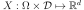
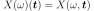
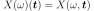
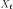
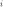
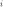

CovarianceModel¶
-
class
CovarianceModel(*args)¶ Covariance model.
Notes
We consider  a multivariate stochastic process of dimension
 , where
, where  is an event,
is an event,  is a domain of
is a domain of  ,
,
 is a multivariate index and
is a multivariate index and
 .
.We note
 the random variable at
index
the random variable at
index  defined by
defined by
 and
and
 a realization of the process
a realization of the process
 , for a given defined by
.
, for a given defined by
.If the process is a second order process, we note:
- its mean function, defined by ,
 its
covariance function, defined by
its
covariance function, defined by
 ,
, its
correlation function, defined for all
its
correlation function, defined for all  ,
by
,
by  such that for all
such that for all  ,
,
 .
.
In a general way, the covariance models write:

where:
 is the scale parameter
is the scale parameter- id the amplitude parameter
 is the Cholesky factor of
is the Cholesky factor of
 :
:

The correlation function
 may depend on additional
specific parameters which are not made explicit here.
may depend on additional
specific parameters which are not made explicit here.The global correlation is given by two separate correlations:
the spatial correlation between the components of  which is given by the correlation matrix
 and the vector of marginal variances
.
The spatial correlation does not depend on .
For each
and the vector of marginal variances
.
The spatial correlation does not depend on .
For each  , it links together the components of
.
, it links together the components of
.the correlation between
 and
which is given by .
and
which is given by .- In the general case, the correlation links each component
 to all the components of
and ;
to all the components of
and ; - In some particular cases, the correlation is such that
depends only on the component
 and that link does not depend on the component
. In that case, can be
defined from the scalar function by
and that link does not depend on the component
. In that case, can be
defined from the scalar function by
 .
Then, the covariance model writes:
.
Then, the covariance model writes:
- In the general case, the correlation links each component

Methods
__call__(*args)Evaluate the covariance function. computeAsScalar(s, t)Compute the covariance function for scalar model. computeStandardRepresentative(s, t)Compute the standard representative function of the covariance model. discretize(*args)Discretize the covariance function on a given mesh. discretizeAndFactorize(*args)Discretize and factorize the covariance function on a given mesh. discretizeAndFactorizeHMatrix(*args)Discretize and factorize the covariance function on a given mesh. discretizeHMatrix(*args)Discretize the covariance function on a given mesh using HMatrix result. discretizeRow(vertices, p)(TODO) draw(*args)Draw a specific component of the covariance model with input dimension 1. getActiveParameter()Accessor to the active parameter set. getAmplitude()Get the amplitude parameter  of the covariance function.
of the covariance function.getClassName()Accessor to the object’s name. getFullParameter()Get the full parameters of the covariance function. getFullParameterDescription()Get the description full parameters of the covariance function. getId()Accessor to the object’s id. getImplementation(*args)Accessor to the underlying implementation. getInputDimension()Get the input dimension  of the covariance function.
of the covariance function.getMarginal(*args)Get the ith marginal of the model. getName()Accessor to the object’s name. getNuggetFactor()Accessor to the nugget factor. getOutputCorrelation()Get the spatial correlation matrix  of the covariance function.
of the covariance function.getOutputDimension()Get the dimension of the covariance function.getParameter()Get the parameters of the covariance function. getParameterDescription()Get the description of the covariance function parameters. getScale()Get the scale parameter  of the covariance function.
of the covariance function.isDiagonal()Test whether the model is diagonal or not. isStationary()Test whether the model is stationary or not. parameterGradient(s, t)Compute the gradient according to the parameters. partialGradient(s, t)Compute the gradient of the covariance function. setActiveParameter(active)Accessor to the active parameter set. setAmplitude(amplitude)Set the amplitude parameter of the covariance function.setFullParameter(parameter)Set the full parameters of the covariance function. setName(name)Accessor to the object’s name. setNuggetFactor(nuggetFactor)Set the nugget factor for the regularization. setOutputCorrelation(correlation)Set the spatial correlation matrix of the covariance function.setParameter(parameter)Set the parameters of the covariance function. setScale(scale)Set the scale parameter of the covariance function.-
__init__(*args)¶ Initialize self. See help(type(self)) for accurate signature.
-
computeAsScalar(s, t)¶ Compute the covariance function for scalar model.
- Available usages:
computeAsScalar(s, t)
computeAsScalar(tau)
Parameters: - s, t : sequences of float
Multivariate index
- tau : sequence of float
Multivariate index
Returns: - covariance : float
Covariance.
Notes
The method makes sense only if the dimension of the process is
 .
It evaluates
.
It evaluates  .
.In the second usage, the covariance model must be stationary. Then we note for
 as
this quantity does not depend on
as
this quantity does not depend on  .
.
-
computeStandardRepresentative(s, t)¶ Compute the standard representative function of the covariance model.
- Available usages:
computeStandardRepresentative(s, t)
computeStandardRepresentative(tau)
Parameters: - s, t : sequences of float
Multivariate index
- tau : float or sequence of float
Multivariate index
Returns: - rho : float
Correlation model

Notes
It evaluates the scalar function or
 if the model is stationary.
if the model is stationary.
-
discretize(*args)¶ Discretize the covariance function on a given mesh.
Parameters: - meshOrGrid :
MeshorRegularGrid Mesh or time grid of size
 associated with the process.
associated with the process.
Returns: - covarianceMatrix :
CovarianceMatrix Covariance matrix (if the process is of dimension
Notes
This method makes a discretization of the model on meshOrGrid composed of the vertices
 and returns the
covariance matrix:
and returns the
covariance matrix:
- meshOrGrid :
-
discretizeAndFactorize(*args)¶ Discretize and factorize the covariance function on a given mesh.
Parameters: - meshOrGrid :
MeshorRegularGrid Mesh or time grid of size
associated with the process.
Returns: - CholeskyMatrix :
TriangularMatrix Cholesky factor of the covariance matrix
 (if the process is of dimension ).
(if the process is of dimension ).
Notes
This method makes a discretization of the model on meshOrGrid composed of the vertices
thanks to the
discretize method and returns its Cholesky factor.- meshOrGrid :
-
discretizeAndFactorizeHMatrix(*args)¶ Discretize and factorize the covariance function on a given mesh.
This uses HMatrix.
Parameters: - meshOrGrid :
MeshorRegularGrid Mesh or time grid of size
associated with the process.- nuggetFactor: float
Nugget factor to be added to the discretized matrix
- hmatParam :
HMatrixParameters Parameter values for the HMatrix
Returns: - HMatrix :
HMatrix Cholesk matrix (if the process is of dimension
), stored in hierarchical format (H-Matrix)
Notes
This method si similar to the discretizeAndFactorize method. This method requires that OpenTURNS has been compiled with the hmat library. The method is helpfull for very large parameters (Mesh, grid, Sample) as its compress data.
- meshOrGrid :
-
discretizeHMatrix(*args)¶ Discretize the covariance function on a given mesh using HMatrix result.
Parameters: - meshOrGrid :
MeshorRegularGrid Mesh or time grid of size
associated with the process.- nuggetFactor: float
Nugget factor to be added to the discretized matrix
- hmatParam :
HMatrixParameters Parameter values for the HMatrix
Returns: - HMatrix :
HMatrix Covariance matrix
 (if the process is of
dimension ), stored in hierarchical format (H-Matrix)
(if the process is of
dimension ), stored in hierarchical format (H-Matrix)
Notes
This method si similar to the discretize method. This method requires that OpenTURNS has been compiled with the hmat library. The method is helpfull for very large parameters (Mesh, grid, Sample) as its compress data.
- meshOrGrid :
-
discretizeRow(vertices, p)¶ (TODO)
-
draw(*args)¶ Draw a specific component of the covariance model with input dimension 1.
Parameters: - rowIndex : int,

The row index of the component to draw. Default value is 0.
- columnIndex: int, :math:`0 leq columnIndex < dimension`
The column index of the component to draw. Default value is 0.
- tMin : float
The lower bound of the range over which the model is plotted. Default value is CovarianceModel-DefaultTMin in
ResourceMap.- tMax : float
The upper bound of the range over which the model is plotted. Default value is CovarianceModel-DefaultTMax in
ResourceMap.- pointNumber : int,

The discretization of the range
![[tMin,tMax]](../../_images/math/b2dc56c66dfdb74554ad4b7403584abf18844da9.svg) over which the model is plotted. Default value is CovarianceModel-DefaultPointNumber in class:~openturns.ResourceMap.
over which the model is plotted. Default value is CovarianceModel-DefaultPointNumber in class:~openturns.ResourceMap.- asStationary : bool
Flag to tell if the model has to be plotted as a stationary model, ie as a function of the lag
 if equals to True, or as a non-stationary model, ie as a function of
if equals to True, or as a non-stationary model, ie as a function of  if equals to False. Default value is True.
if equals to False. Default value is True.- correlationFlag : bool
Flag to tell if the model has to be plotted as a correlation function if equals to True or as a covariance function if equals to False. Default value is False.
Returns: - graph :
Graph A graph containing a unique curve if asStationary=True and if the model is actually a stationary model, or containing the iso-values of the model if asStationary=False or if the model is nonstationary.
- rowIndex : int,
-
getActiveParameter()¶ Accessor to the active parameter set.
Returns: - active :
Indices Indices of the active parameters.
- active :
-
getAmplitude()¶ Get the amplitude parameter
of the covariance function.Returns: - amplitude :
Point The amplitude parameter of the covariance function.
- amplitude :
-
getClassName()¶ Accessor to the object’s name.
Returns: - class_name : str
The object class name (object.__class__.__name__).
-
getFullParameter()¶ Get the full parameters of the covariance function.
Returns: - parameter :
Point List the full parameter of the covariance function i.e. scale parameter
, the
the amplitude parameter ,
the Spatial correlation parameter ;
and potential other parameter depending on the model;
- parameter :
-
getFullParameterDescription()¶ Get the description full parameters of the covariance function.
Returns: - description :
Description Description of the full parameter of the covariance function.
- description :
-
getId()¶ Accessor to the object’s id.
Returns: - id : int
Internal unique identifier.
-
getImplementation(*args)¶ Accessor to the underlying implementation.
Returns: - impl : Implementation
The implementation class.
-
getInputDimension()¶ Get the input dimension
of the covariance function.Returns: - inputDimension : int
Spatial dimension
of the covariance function.
-
getMarginal(*args)¶ Get the ith marginal of the model.
Returns: - marginal : int or sequence of int
index of marginal of the model.
-
getName()¶ Accessor to the object’s name.
Returns: - name : str
The name of the object.
-
getNuggetFactor()¶ Accessor to the nugget factor.
This parameter allows smooth predictions from noisy data. The nugget is added to the diagonal of the assumed training covariance (thanks to discretize) and acts as a Tikhonov regularization in the problem.
Returns: - nuggetFactor : float
Nugget factor used for the regularization of the discretized covariance matrix.
-
getOutputCorrelation()¶ Get the spatial correlation matrix
of the covariance function.Returns: - spatialCorrelation :
CorrelationMatrix Correlation matrix
.
- spatialCorrelation :
-
getOutputDimension()¶ Get the dimension
of the covariance function.Returns: - d : int
Dimension
such that
This is the dimension of the process .
-
getParameter()¶ Get the parameters of the covariance function.
Returns: - parameters :
Point List of the scale parameter
and the
amplitude parameter of the covariance
function.The other specific parameters are not included.
- parameters :
-
getParameterDescription()¶ Get the description of the covariance function parameters.
Returns: - descriptionParam :
Description Description of the components of the parameters obtained with the getParameter method..
- descriptionParam :
-
getScale()¶ Get the scale parameter
of the covariance function.Returns: - scale :
Point The scale parameter
used in the
covariance function.
- scale :
-
isDiagonal()¶ Test whether the model is diagonal or not.
Returns: - isDiagonal : bool
True if the model is diagonal.
-
isStationary()¶ Test whether the model is stationary or not.
Returns: - isStationary : bool
True if the model is stationary.
Notes
The covariance function
 is stationary when it is invariant by
translation:
is stationary when it is invariant by
translation:We note for
.
-
parameterGradient(s, t)¶ Compute the gradient according to the parameters.
Parameters: - s, t : sequences of float
Multivariate index .
Returns: - gradient :
Matrix Gradient of the function according to the parameters.
-
partialGradient(s, t)¶ Compute the gradient of the covariance function.
Parameters: - s, t : floats or sequences of float
Multivariate index .
Returns: - gradient :
Matrix Gradient of the covariance function.
-
setActiveParameter(active)¶ Accessor to the active parameter set.
Parameters: - active : sequence of int
Indices of the active parameters.
-
setAmplitude(amplitude)¶ Set the amplitude parameter
of the covariance function.Parameters: - amplitude :
Point The amplitude parameter to be used in the covariance function. Its size must be equal to the dimension of the covariance function.
- amplitude :
-
setFullParameter(parameter)¶ Set the full parameters of the covariance function.
Parameters: - parameter :
Point List the full parameter of the covariance function i.e. scale parameter
, the
the amplitude parameter ,
the Spatial correlation parameter ;
and potential other parameter depending on the model;Must be at least of dimension .
- parameter :
-
setName(name)¶ Accessor to the object’s name.
Parameters: - name : str
The name of the object.
-
setNuggetFactor(nuggetFactor)¶ Set the nugget factor for the regularization.
Acts on the discretized covariance matrix.
Parameters: - nuggetFactor : float
nugget factor to be used for the regularization of the discretized covariance matrix.
-
setOutputCorrelation(correlation)¶ Set the spatial correlation matrix
of the covariance function.Parameters: - spatialCorrelation :
CorrelationMatrix Correlation matrix .
- spatialCorrelation :
 .
.